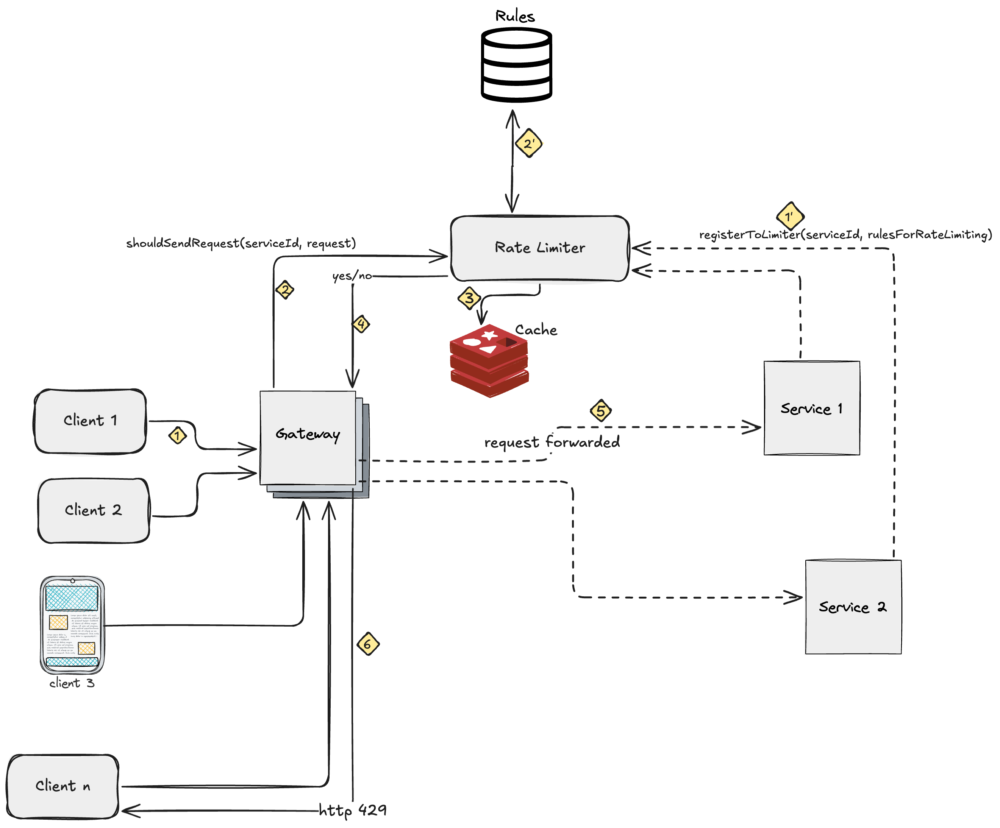

Rate Limiter Service Design
In this project, I will be building a rate limiter service. Below is the HLD and the detailed tech doc for the same. This blog post is a placeholder for the complete tech doc, which is on Google Docs and is linked below.
Requirements
- Limit the requests sent to the service as per the rate/rules defined.
- Shared amongst different services.
- Allows multiple services to register rules, on the basis of which rate limiting is supposed to happen. Rules can be of the following types :
- field
x(from the request) should not appear more thanytimes per minute - limit requests to the service to
ytimes per ‘time_unit’ - Tells what return message should be sent to the client in case of request rejection. For example :
- Retry with exponential backoff
- Retry with fixed time
- Daily Limit Reached
- field
- Minimal overhead latency
HLD

You can go through the complete tech document : here
The implementation with tech stack : (Go/DynamoDB/Redis): github.com/vaibhavahuja/rate-limiter
Powered by Jekyll